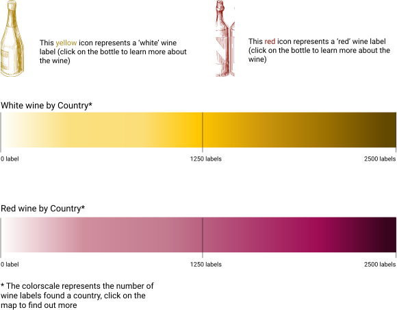

It is a wine wine world
What do you fancy drinking?
There are so many factors that make a wine taste better than other wines...
terroirs and climates are the most influential factors!
Explore white & red wine by country or dig deeper into the specific region
by toggling options on the top navigation menu.
See below legends for some tips.Cheers!
